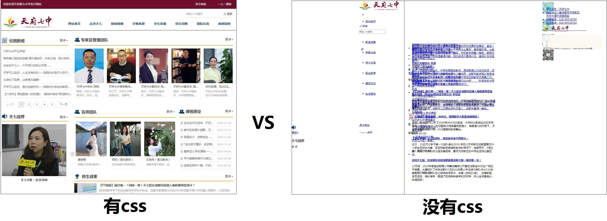
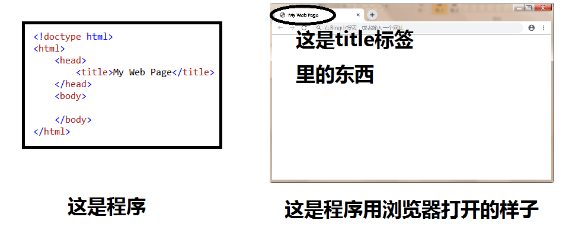
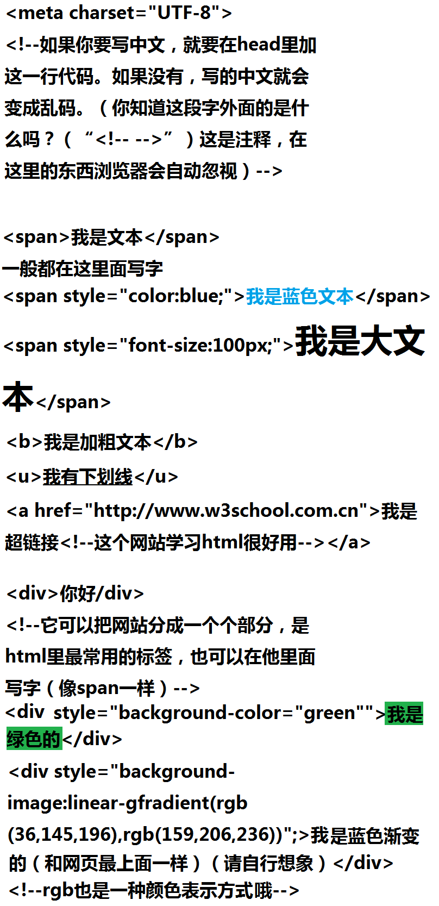

网站是个好东西，它有很多功能，搜索、游戏、视频、企业……它占据我们“电脑生活”的大部分。那么，它是什么呢？又是怎么做成的呢？
一个完整的网站一般由网址、空间、网站内容组成。
网址：就是一个由字母和数字组成的地址，在浏览器中地址栏输入后就能够访问网站，如www.runoob.com。网址的后缀叫域名，注册域名需要花钱，价格从10元到9999元不等。域名还有时效性，域名到期后需要续费，不续费域名不在属于你的了，别人可以再次注册。
空间：空间就是存储网站内容的地方，一般都使用网上的虚拟主机，还有一些大型的网站会自己买独立的服务器（性能强大但很贵）。网站的空间有一般分为国内空间和国外空间，国内空间对于国内的人来说速度更快，但更贵，且需要备案，国外空间速度不及国内空间，但是不需要备案，且非常便宜；
网站内容：网站内容一般由展示界面、程序和资料组成，界面就是肉眼能够直观了解网站的页面，所有的页面都是由程序来支撑的，在加上与网站相关的资料，组成了一个完整的网站内容。
静态网页：就是我们常见的以htm或html结束页面。每一个静态页面就对应服务器上的一个文件。静态页面不需要与数据库通信,也不会有用户注册、在线聊天等功能，对于服务器要求也相对低一些。网页设计好并上传到服务器后,除非把网站文件下载到电脑上,用专业的网站制作软件修改好后再次上传，否则不能修改。这种网站主要做一些展示、介绍的功能。
动态网站：并不是说网站上有一些动态的图片、动画就属于动态网站。一般情况下,动态网站是先从数据库里面获取数据再显示到网站页面上的,网站内容实时更新。与用户交互性强,比如说一些论坛、注册页面等都属于动态网站。动态网站能实现人和网络的沟通，能存储和展示用户信息和资料，能根据用户的爱好发送相应的内容。一般用JSP、PHP、ASP编写
以下我讲的都是静态网页，因为动态网页很麻烦。
说完网站的基本架构，我们来看看它最重要的东西：程序。
编网站的程序专业地讲就叫做web开发或前端。网页的程序分为三个部分：html、css和JavaScript，html是整个程序的结构（相当于骨骼和内脏），css是装饰（相当于皮肤和衣服），JavaScript是控制（相当于大脑）。html是程序最重要的东西，不能缺少，其它两个可以不要，但你的程序就会很丑，而且基本不能互动。
一般都会用编辑器来写程序（我用的是Aptana Studio 3），但是没有下载的话可以用文本文档（记事本）写了之后把后缀名（.txt）改为“.html”，然后用浏览器打开。
下面就是程序的基本结构，一般东西都写在“body”里。里面有“<”和“>”组成的叫做标签，程序就是由一个个标签组成的。
介绍几个基本的标签
我对网站的介绍就到这里了,如果感兴趣的话可以点击这里学习html。